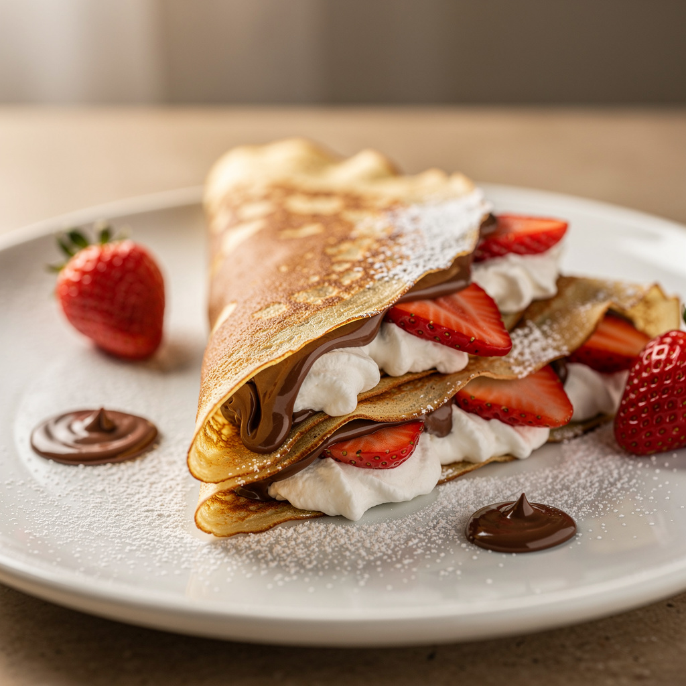

French Crepes

French crepes are thin, delicate pancakes originating from France. They can be served sweet or savory, making them perfect for breakfast, dessert, or even dinner. These homemade crepes are soft, flexible, and incredibly delicious.
Ingredients
- 1 cup all-purpose flour
- 2 eggs
- 1 1/4 cups milk
- 2 tbsp melted butter
- 1 tbsp sugar
- 1 pinch salt
Instructions
- In a bowl, mix flour, eggs, milk, butter, sugar, and salt until smooth.
- Let the batter rest for 20–30 minutes.
- Heat a non-stick pan and lightly grease with butter.
- Pour a thin layer of batter and cook until lightly golden.
- Flip and cook the other side.
- Fill with chocolate, fruits, or cream and serve warm.
Tips
For best results, let the batter rest before cooking. You can fill crepes with Nutella, strawberries, bananas, or even savory fillings like cheese and ham.